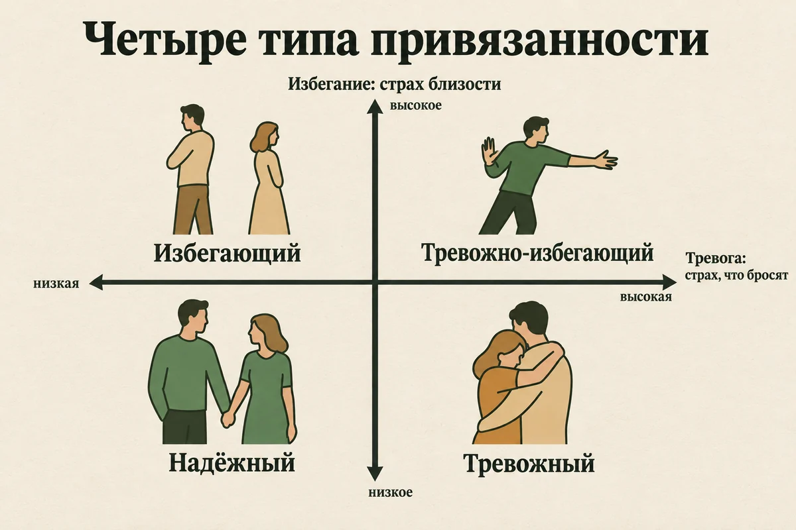
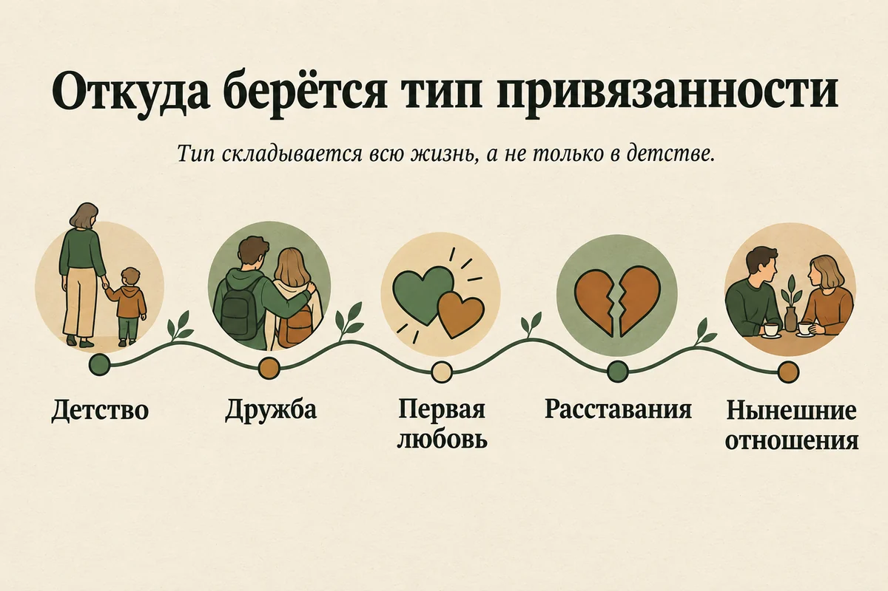
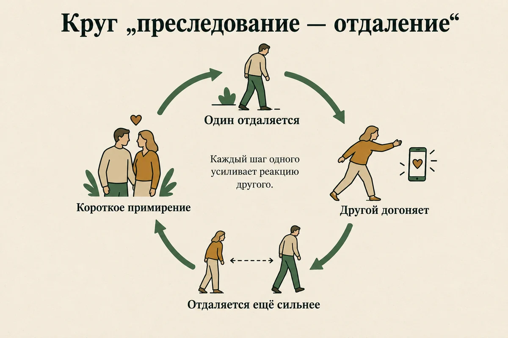
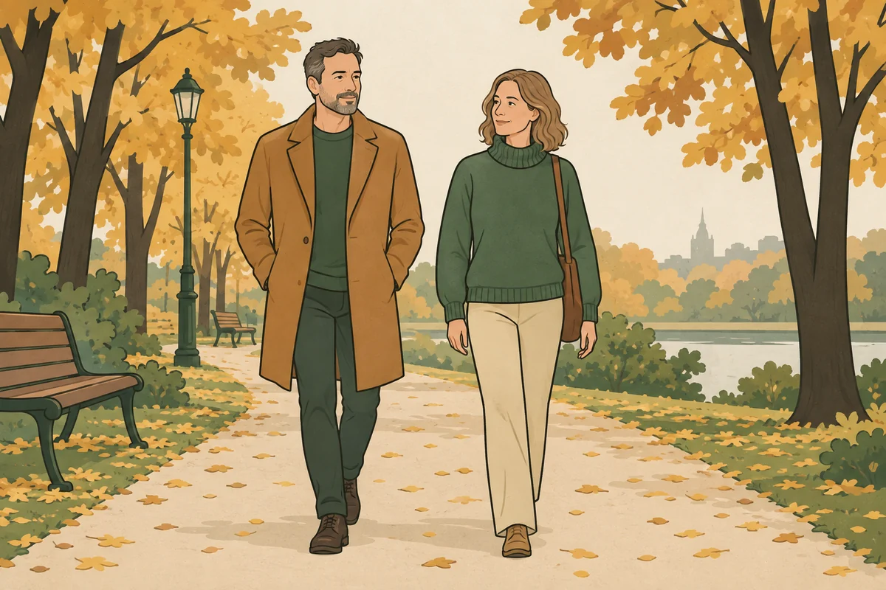
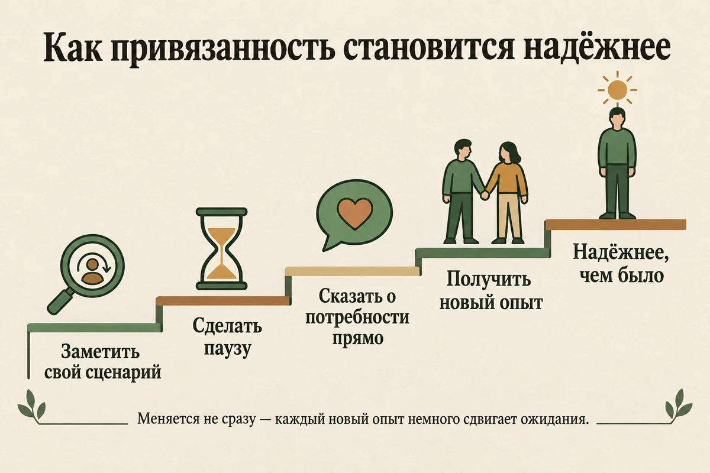

Главная → Блог → Типы привязанности
Типы привязанности: 4 типа, признаки и можно ли изменить свой
Обновлено: 30.09.2026 · 17 минут чтения
Почему одни спокойно ждут ответа на сообщение, а другие через час уже уверены, что их разлюбили? Почему кто-то после самого тёплого вечера вдруг пропадает на неделю? Тип привязанности — это привычный способ вести себя в близких отношениях: насколько человек боится, что его оставят, и насколько ему трудно подпускать другого близко. Психологи выделяют четыре типа: надёжный, тревожный, избегающий и тревожно-избегающий. Это не диагноз и не приговор: тип складывается из опыта, отчасти меняется в новых отношениях, и у многих взрослых он со временем становится надёжнее. Ниже — как проявляется каждый тип, откуда он берётся, почему тревожного и избегающего так часто тянет друг к другу и что помогает чувствовать себя в близости спокойнее.
- Что такое привязанность простыми словами
- Четыре типа привязанности: сравнительная таблица
- Надёжный тип
- Тревожный тип привязанности: признаки
- Избегающий тип привязанности: признаки
- Тревожно-избегающий (дезорганизованный) тип
- Откуда берётся тип привязанности
- Как понять свой тип привязанности
- Ловушка «тревожный + избегающий»
- Как вести себя с партнёром избегающего типа
- Что делать, если у вас тревожный тип
- Можно ли изменить тип привязанности
- Мифы о типах привязанности
- Когда обращаться к психологу
- Частые вопросы
Что такое привязанность простыми словами
Привязанность — это врождённая система, которая в моменты опасности, боли или растерянности заставляет искать близкого человека и успокаиваться рядом с ним. Её описал британский психиатр Джон Боулби в середине XX века, наблюдая за детьми, разлучёнными с родителями. Младенец не выживет один, поэтому стремление держаться рядом со «своим» взрослым встроено в нас так же прочно, как голод.
Коллега Боулби Мэри Эйнсворт заметила, что дети ведут себя в разлуке по-разному. Одни плачут, когда мама уходит, и быстро успокаиваются, когда она возвращается. Другие будто не замечают ни ухода, ни возвращения. Третьи цепляются за маму и никак не могут утешиться. Так появились первые типы привязанности — пока ещё детские.
В 1987 году американские психологи Синди Хейзан и Филип Шейвер предположили, что романтическая любовь у взрослых работает по той же схеме: партнёр становится главной фигурой привязанности, к которой мы бежим в трудный момент. В их первом газетном опросе около 56% людей описали себя как надёжных, около 25% — как избегающих и около 19% — как тревожных, и эти доли оказались близки к тем, что наблюдали у детей.
Сегодня взрослую привязанность чаще описывают не типами, а двумя шкалами:
- Тревога привязанности — насколько человек боится, что его разлюбят, бросят, предпочтут другому, и насколько сомневается, что достоин любви.
- Избегание привязанности — насколько ему некомфортно зависеть от других, делиться чувствами и подпускать близко.
Четыре типа — это просто четыре угла, которые получаются, если сочетать высокие и низкие значения этих двух шкал. Исследование Криса Фрейли с коллегами 2015 года показало, что люди на самом деле не делятся на чёткие группы: у каждого есть своя точка на этой плоскости. Поэтому типы удобны, чтобы понять себя, но не стоит превращать их в ярлыки.

Четыре типа привязанности: сравнительная таблица
Каждый тип можно описать через два вопроса: как человек видит себя («я достоин любви?») и как видит других («на людей можно положиться?»). Эту схему в 1991 году предложили канадские психологи Ким Бартоломью и Леонард Горовиц, и на ней держится большинство популярных описаний.
| Как видит себя и других | Как ведёт себя в отношениях | Что происходит в ссоре или разлуке | |
|---|---|---|---|
| Надёжный | «Со мной всё в порядке, и на людей в целом можно положиться» | Легко сближается, спокойно переносит разлуку, прямо говорит о потребностях | Расстраивается, но ищет разговор и решение, быстро восстанавливает контакт |
| Тревожный | «Другие хорошие, а я, возможно, недостаточно хорош, чтобы меня не бросили» | Хочет много близости и подтверждений, внимательно следит за настроением партнёра | Тревога нарастает, хочется немедленно всё выяснить, писать, звонить, добиваться ответа |
| Избегающий | «Я справлюсь сам, а от других лучше не зависеть» | Ценит независимость, неохотно говорит о чувствах, держит часть жизни закрытой | Замыкается, уходит в дела, нуждается в расстоянии, чтобы успокоиться |
| Тревожно-избегающий | «Я не очень ценен, и близкие могут ранить» | Одновременно хочет близости и боится её, отношения идут рывками | Метается между «не уходи» и «оставь меня», может резко обрывать контакт |
Названия в разных книгах и тестах отличаются, и это сбивает с толку. Тревожный тип ещё называют тревожно-озабоченным, амбивалентным или «вовлечённым». Избегающий — отстранённым или отвергающим. Тревожно-избегающий — боязливо-избегающим, а в популярных текстах часто «дезорганизованным». Последнее не совсем точно: дезорганизованной называют привязанность у детей, но в быту это слово прижилось как синоним.
Надёжный тип
Надёжный тип — это не «идеальный человек без проблем», а способность оставаться в контакте, когда в отношениях трудно. Людям с надёжной привязанностью тоже бывает больно, обидно и страшно. Разница в том, что эти чувства не захлёстывают их целиком и не заставляют ни цепляться, ни убегать.
Как это выглядит в жизни:
- Партнёр не ответил несколько часов — человек думает «наверное, занят», а не «он охладел».
- Может попросить о помощи и принять её, не чувствуя себя слабым.
- Говорит о недовольстве прямо, без намёков и молчаливых обид.
- Спокойно проводит время отдельно и не воспринимает личное пространство партнёра как угрозу.
- После ссоры первым идёт мириться или легко откликается, когда мириться идут к нему.
- Если отношения становятся разрушительными, способен из них уйти.
Надёжность — не врождённое качество, а результат опыта: человек много раз убеждался, что к нему откликаются и что конфликт не означает конец. Поэтому её можно развивать — об этом в разделе можно ли изменить тип привязанности.
Тревожный тип привязанности: признаки
Тревожный тип привязанности — это постоянный фоновый страх потерять близкого человека и сомнение, что тебя действительно любят. Система привязанности у такого человека включается очень легко: малейший намёк на отдаление воспринимается как сигнал опасности, и возникает острое желание срочно восстановить связь.
Типичные признаки:
- Задержка с ответом на сообщение вызывает тревогу, человек перечитывает переписку и ищет, что сделал не так.
- Нужны частые подтверждения: «ты меня любишь?», «у нас всё хорошо?».
- Хорошо считывает малейшие изменения в настроении партнёра — и часто толкует их не в свою пользу.
- Трудно быть одному, после расставания кажется, что жизнь закончилась.
- Ради отношений готов подстраиваться, уступать, жертвовать своими интересами.
- В ссоре не может ждать: хочется выяснить всё прямо сейчас, иначе невыносимо.
- Иногда проверяет партнёра или устраивает «тесты» — чтобы убедиться, что он не уйдёт.
- Часто испытывает ревность даже без явного повода.
Стратегию тревожного человека исследователи называют гиперактивацией: по обзору Марио Микулинсера и Филипа Шейвера, люди с высокой тревогой привязанности усиливают свои переживания и сигналы бедствия, чтобы партнёр точно заметил и откликнулся. В детстве это работало: громкий плач возвращал взрослого, который откликался непредсказуемо. Во взрослых отношениях эта же стратегия часто утомляет партнёра и отталкивает его — и страх оказаться брошенным сбывается.
Если привязанность к конкретному человеку становится единственной опорой, а без него вы чувствуете, что не существуете, речь уже может идти об эмоциональной зависимости — это соседняя, но отдельная тема.
Избегающий тип привязанности: признаки
Избегающий тип привязанности — это привычка держать дистанцию и рассчитывать только на себя, потому что близость ощущается как угроза свободе или как риск разочароваться. Снаружи такие люди часто выглядят самодостаточными и спокойными. Но это не отсутствие потребности в близости, а способ её не чувствовать.
Типичные признаки:
- Когда отношения становятся серьёзнее, появляется желание отстраниться: больше работы, меньше встреч, реже сообщения.
- Трудно говорить о чувствах, разговоры «о нас» раздражают или вызывают желание уйти.
- Сложно просить о помощи — кажется, что это слабость или что потом придётся расплачиваться.
- Замечает в партнёре недостатки, когда тот становится слишком близким, и начинает думать, что «это не тот человек».
- Часто вспоминает бывшего партнёра или воображаемого «идеального» — того, с кем не нужно сближаться по-настоящему.
- В ссоре замолкает, уходит в телефон или из дома, отвечает «всё нормально».
- Ценит личное пространство так, что партнёр чувствует себя лишним.
Стратегию избегающего человека называют деактивацией: он приглушает сигналы привязанности, отвлекается, обесценивает свои потребности. Исследования показывают, что за внешним спокойствием нередко стоит физиологическое напряжение: человек переживает, но не даёт себе это заметить. Важно различать: избегающий тип — не то же самое, что холодность или нежелание любить. Такие люди привязываются, скучают и страдают от расставаний, просто иначе это показывают.
Избегающий тип у мужчин и у женщин. В метаанализе Марко Дель Джудиче по данным более 66 тысяч человек мужчины в среднем чуть чаще избегающие, а женщины — чуть чаще тревожные. Но различия небольшие, сильно зависят от страны и выборки, а среди молодёжи почти исчезают. То есть избегающая женщина и тревожный мужчина — не исключение, а обычное дело, и определять тип по полу нельзя.
Тревожно-избегающий (дезорганизованный) тип
Тревожно-избегающий тип сочетает сильную потребность в близости с таким же сильным страхом перед ней. Человек тянется к партнёру и одновременно ждёт от него боли, поэтому его поведение кажется противоречивым: сегодня «ты мне очень нужен», завтра — холод и отстранение.
- Отношения идут рывками: бурное сближение, затем резкий разрыв, затем возвращение.
- Сильная ревность и страх измены сочетаются с нежеланием раскрываться.
- Трудно доверять даже тому, кто ни разу не подвёл.
- Человек часто сам не понимает, чего хочет, и испытывает сильный стыд за свою «нелогичность».
- Близость может вызывать тревогу почти телесно: сжатие, желание сбежать, оцепенение.
Этот тип чаще встречается у людей, для которых в детстве близкий взрослый одновременно был и источником защиты, и источником страха, — например, при насилии, тяжёлом пренебрежении или зависимости родителей. Если вы узнаёте себя здесь и вместе с этим замечаете навязчивые воспоминания, вспышки паники или ощущение нереальности, загляните в статьи про детские травмы и ПТСР. С этим типом особенно полезно работать вместе со специалистом: в одиночку трудно разобраться, какие реакции — про прошлое, а какие — про сегодняшние отношения.
Откуда берётся тип привязанности
Тип привязанности складывается из опыта близости — прежде всего раннего, но не только. Классическая теория говорит: если взрослый откликался на ребёнка чутко и предсказуемо, ребёнок учится, что мир безопасен, а он сам ценен. Если откликался непредсказуемо — ребёнок усиливает сигналы (тревожная стратегия). Если регулярно отвергал или стыдил за слёзы — ребёнок учится не просить (избегающая стратегия).
Но современные данные смягчают эту картину. В обзоре Криса Фрейли и Гленна Ройсмана 2019 года, построенном на долгих исследованиях с наблюдением от младенчества до взрослости, сформулированы важные выводы:
- ранний опыт действительно связан со взрослой привязанностью, но эта связь слабая и непостоянная;
- в детстве и юности тип меняется легче, чем во взрослом возрасте;
- ранний опыт не предопределяет взрослую жизнь.
В метаанализе Мартина Пинквардта с коллегами по 127 работам и более чем 21 тысяче человек устойчивость привязанности со временем оказалась средней, а на интервалах больше 15 лет — статистически незаметной. Проще говоря, то, каким вы были в год, мало что говорит о том, какой вы в тридцать.
На тип влияют и другие вещи: отношения с друзьями в подростковом возрасте, первая любовь, болезненные расставания, измены, травмы, темперамент. А ещё тип может различаться в разных отношениях: можно быть надёжным с другом и тревожным с партнёром. Поэтому не стоит сводить всё к «виноваты родители»: это и неправда, и не помогает меняться.

Как понять свой тип привязанности
Точнее всего тип определяют опросники и структурированное интервью с психологом, но первое представление можно получить, честно посмотрев на свои реакции в отношениях. Важно смотреть не на то, какой вы в спокойные времена, а на то, что происходит, когда близость под угрозой: партнёр отдалился, вы поссорились, предстоит разлука.
Спросите себя:
- Когда партнёр отдаляется, моё первое желание — приблизиться (написать, выяснить, добиться ответа) или отойти (замолчать, заняться делами, «мне и так нормально»)?
- Когда отношения становятся ближе, мне спокойнее или теснее?
- О чём мой главный страх в отношениях — что меня бросят или что меня поглотят и я потеряю свободу?
- Этот сценарий повторяется только с одним человеком или почти во всех моих отношениях?
Если вы в основном тянетесь ближе и боитесь потерять — это похоже на тревожную сторону. Если отходите и бережёте свободу — на избегающую. Если в вас есть и то и другое попеременно — на тревожно-избегающую. Если в трудный момент вам в целом удаётся оставаться в контакте и не терять себя — на надёжную.
Многие тесты «на тип привязанности» в интернете дают один из четырёх ярлыков. Это удобно, но, как мы писали выше, люди не делятся на коробки. Смотрите на результат как на подсказку о направлении — больше тревоги или больше избегания, — а не как на окончательный вердикт. И помните, что результат отражает текущее состояние: в трудный период жизни или сразу после расставания тревога почти у всех выше обычного.
Ловушка «тревожный + избегающий»
Тревожный и избегающий часто оказываются вместе, и их отношения легко превращаются в замкнутый круг: чем сильнее один догоняет, тем сильнее другой убегает. В эмоционально-фокусированной терапии пар этот паттерн называют «преследование — отдаление».
Как это работает:
- Избегающий партнёр отдаляется — устал, много работы, нужна пауза.
- Тревожный считывает это как угрозу и усиливает сигналы: пишет чаще, задаёт вопросы, обижается, требует разговора.
- Избегающий чувствует давление и отходит ещё дальше — ему нужно пространство, чтобы успокоиться.
- Тревога достигает пика, случается ссора или ультиматум.
- Кто-то уступает, наступает короткое тёплое примирение — и круг начинается заново.
Почему их тянет друг к другу? Одно из объяснений: каждый подтверждает ожидания другого. Тревожный привык добиваться любви, и недоступный партнёр кажется ему «тем самым» — возникает знакомое волнение, которое легко принять за страсть. Избегающему рядом с тревожным легче оставаться в роли того, кому нужно меньше. А спокойный надёжный человек тревожному иногда кажется «скучным» — просто потому, что с ним нет этих качелей.
Выйти из круга можно, если оба увидят его как общего противника, а не как вину другого. Тревожному помогает научиться успокаиваться, не требуя немедленного ответа. Избегающему — предупреждать о паузе, а не исчезать молча: «Мне нужен час побыть одному, потом я вернусь, и мы поговорим». Если круг повторяется годами и сопровождается унижением, контролем или угрозами, это уже не про типы привязанности, а про токсичные отношения.

Как вести себя с партнёром избегающего типа
С партнёром избегающего типа помогает не давление, а предсказуемость и безопасность: чем меньше он чувствует, что его загоняют в угол, тем легче ему приближаться самому. Это не значит, что вы должны отказываться от своих потребностей.
- Говорите о потребностях коротко и конкретно. Не «ты вечно меня игнорируешь», а «мне важно, чтобы ты писал, если задерживаешься». Длинные разговоры о чувствах избегающий часто переживает как перегрузку.
- Давайте время. Если он просит паузу, договоритесь, когда вы вернётесь к разговору, — и не догоняйте раньше.
- Замечайте его способы проявлять заботу. Избегающие люди часто выражают любовь делами, а не словами: починить, привезти, решить вопрос.
- Не принимайте отстранение только на свой счёт. Часто это способ справиться со своим напряжением, а не оценка вас.
- Сохраняйте свою жизнь. Друзья, интересы и поддержка вне пары снижают давление на отношения и помогают вам самим меньше тревожиться.
- Решите, что для вас неприемлемо. Понимание его типа не обязывает терпеть постоянный холод. Если близости годами недостаточно и партнёр не готов ничего менять, это повод всерьёз подумать об отношениях.
Если в отношениях вы постоянно чувствуете, что просите слишком много, и перестаёте понимать, где ваши желания, а где страх потерять человека, пригодится статья про личные границы.

Что делать, если у вас тревожный тип
Главная задача при тревожной привязанности — научиться успокаивать себя самому, а не только через ответ партнёра. Тогда близость перестаёт быть вопросом выживания, и отношения становятся спокойнее. Вот шаги, которые помогают:
- Замечайте включение тревоги. Сердце колотится, мысли крутятся вокруг партнёра, хочется немедленно написать — назовите это: «У меня включилась тревога привязанности». Само название уже немного снижает её силу.
- Сделайте паузу перед действием. Дайте себе 20–30 минут, прежде чем отправить пятое сообщение или устроить выяснение отношений. Подышите медленно, пройдитесь, займите руки. Тревога похожа на волну: она поднимается и сама спадает.
- Отделите факты от догадок. Факт: он не ответил два часа. Догадка: он охладел. Какие ещё объяснения возможны? Этот приём из когнитивно-поведенческой терапии помогает не реагировать на то, что вы сами додумали.
- Говорите о потребностях прямо, а не через проверки. Вместо того чтобы молча ждать, заметит ли партнёр вашу обиду, скажите: «Мне тревожно, когда ты долго не отвечаешь. Можешь коротко написать, что занят?»
- Держите опору вне отношений. Друзья, работа, хобби, спорт — всё, что даёт ощущение ценности не только через партнёра. Чем больше у вас источников поддержки, тем меньше вес каждого сообщения.
- Выбирайте спокойных людей. Если «искрит» только с недоступными — это не судьба, а знакомый сценарий. Дайте шанс тем, с кем спокойно, даже если поначалу кажется, что не хватает волнения.
- Работайте с самооценкой. Тревожная привязанность держится на сомнении «достоин ли я любви». Об этом подробнее — в статье как повысить самооценку и о подходе терапии, сфокусированной на сострадании.
Если вы избегающий, шаги похожи, но в обратную сторону: замечать желание отстраниться, говорить партнёру о паузе вместо молчаливого ухода, пробовать делиться небольшими переживаниями и просить о помощи в мелочах, чтобы проверить на опыте, что зависимость не всегда опасна.
Если хочется разобраться в своих реакциях. Иногда трудно понять, что с вами происходит в отношениях: почему так тревожно или почему хочется сбежать. В чате AI Therapist можно описать ситуацию и по шагам разобрать, что именно вас задевает и как об этом сказать партнёру. Анонимно, без регистрации и в любое время. Чат не заменяет специалиста, но помогает начать.
Начать разговорМожно ли изменить тип привязанности
Да, тип привязанности можно изменить, хотя это происходит постепенно. Во взрослом возрасте он устойчивее, чем в детстве, но не застывает навсегда. Для людей, которые выросли в трудных условиях, а во взрослом возрасте стали надёжными, есть даже специальный термин — «заработанная надёжность» (earned security). Его подробно исследовали Гленн Ройсман с коллегами.
Что помогает:
- Устойчивые отношения с надёжным человеком. Модель, которую описали Химена Арриага, Джеффри Симпсон и коллеги, предполагает: тревога снижается, когда рядом человек, который помогает вам поверить в себя, а избегание — когда вы на опыте убеждаетесь, что зависеть от другого безопасно. Партнёр не лечит, но много раз повторённый новый опыт постепенно меняет ожидания.
- Психотерапия. По систематическому обзору Питера Тейлора с коллегами, после психотерапии надёжность привязанности в среднем растёт, а тревога снижается. С избеганием данные менее однозначны. Хорошо изученных контролируемых исследований пока мало, но результаты повторялись в разных подходах и группах пациентов.
- Осознавание своего сценария. Когда вы понимаете, что происходит, у вас появляется выбор: не отправить десятое сообщение, не исчезнуть молча, а сказать о том, что чувствуете.
- Время и терпение. Меняются не сами чувства, а то, что вы с ними делаете. Тревога может ещё долго включаться, но всё реже управлять поступками.
С привязанностью работают в разных подходах: в схема-терапии — с глубинными убеждениями «меня бросят» и «никому нельзя доверять», в терапии, сфокусированной на сострадании, — со стыдом и самокритикой, в ACT — с тем, чтобы действовать по своим ценностям, даже когда тревожно, в эмоционально-фокусированной терапии пар — с кругом «преследование — отдаление».

Мифы о типах привязанности
Популярность темы породила много упрощений. Вот самые частые:
| Как на самом деле | |
|---|---|
| «Тип определяется в детстве и навсегда» | Ранний опыт влияет, но слабо и непостоянно. Тип меняется в новых отношениях и в терапии |
| «Избегающий не умеет любить» | Умеет и привязывается, просто иначе выражает близость и сильнее её боится |
| «Тревожный — значит слишком требовательный» | Его потребность в близости нормальна, трудность в том, как он справляется со страхом её потерять |
| «Людей можно разделить на четыре типа» | Это две шкалы, и у каждого своя точка на них. Типы — упрощение для удобства |
| «Надо найти только надёжного партнёра» | Надёжный партнёр помогает, но пары с разными типами тоже бывают счастливыми, если оба видят свой сценарий |
| «Узнал тип партнёра — значит понял его» | Тип объясняет реакции, но не оправдывает жестокость и не заменяет разговор с живым человеком |
Когда обращаться к психологу
Большинство людей могут сделать свою привязанность надёжнее и без терапии. Но стоит обратиться к психологу или психотерапевту, если:
- один и тот же болезненный сценарий повторяется во всех ваших отношениях;
- страх быть брошенным настолько силён, что мешает спать, работать и думать о чём-то другом;
- вы не можете выдержать близость и раз за разом обрываете отношения, хотя хотите их сохранить;
- за вашими реакциями стоит опыт насилия, пренебрежения или травмы, и воспоминания приходят против воли;
- вы остаётесь в отношениях, где вас унижают, контролируют или пугают, потому что уйти кажется невозможным;
- после расставания долго не проходят подавленность, потеря интереса, нарушения сна — это могут быть признаки депрессии;
- появились мысли о том, что жить не стоит, — в этом случае помощь нужна сегодня.
Если вы в паре и хотите вместе разорвать круг «преследование — отдаление», хорошо помогает семейный психолог. Бесплатно в России можно обратиться в психоневрологический диспансер по месту жительства и в региональные центры психологической помощи; подробнее — в справочнике бесплатной помощи.
Статья носит просветительский характер и не заменяет консультацию специалиста. Если вам прямо сейчас невыносимо тяжело или появляются мысли о том, чтобы причинить вред себе или другим, позвоните: 112 — при угрозе жизни; +7 (495) 989-50-50 — круглосуточная линия ЦЭПП МЧС России; 8-800-2000-122 (с мобильного — 124) — детям, подросткам и их родителям; 051 (с мобильного 8 (495) 051) — для Москвы. Куда ещё можно обратиться бесплатно — в справочнике помощи.
Частые вопросы
Какие бывают типы привязанности?
Обычно выделяют четыре типа привязанности: надёжный, тревожный, избегающий и тревожно-избегающий, который ещё называют дезорганизованным. Они получаются из сочетания двух шкал — тревоги, что вас бросят, и избегания близости. У надёжного обе низкие, у тревожно-избегающего обе высокие.
Как понять, что у человека избегающий тип привязанности?
Человек с избегающим типом отдаляется, когда отношения становятся ближе, неохотно говорит о чувствах, с трудом просит о помощи и в ссоре замолкает или уходит. При этом он не холоден по натуре: он привязывается и скучает, но близость вызывает у него напряжение. Определять тип по нескольким поступкам не стоит — важно, повторяется ли этот сценарий.
Чем тревожный тип привязанности отличается от эмоциональной зависимости?
Тревожный тип — это способ реагировать в любых близких отношениях: сильный страх потерять партнёра и потребность в подтверждениях. Эмоциональная зависимость — более узкое и тяжёлое состояние, когда вся жизнь и самоощущение держатся на конкретном человеке. Тревожная привязанность повышает риск зависимости, но не равна ей.
Можно ли изменить тип привязанности?
Да. Во взрослом возрасте тип устойчивее, чем в детстве, но меняется под влиянием долгих надёжных отношений и психотерапии. Для людей, которые стали надёжными после трудного детства, в психологии есть термин «заработанная надёжность». Изменения идут постепенно: сначала меняется поведение, потом ожидания.
Почему тревожного и избегающего тянет друг к другу?
Каждый подтверждает ожидания другого: тревожный привык добиваться любви, и недоступный партнёр вызывает у него знакомое волнение, похожее на страсть, а избегающему рядом с тревожным легко оставаться тем, кому нужно меньше. Так возникает круг «преследование — отдаление». Выйти из него можно, если оба увидят свой сценарий и начнут договариваться о близости и паузах.
Бывает ли избегающий тип у женщин?
Да, и нередко. По данным метаанализа, мужчины в среднем чуть чаще избегающие, а женщины чуть чаще тревожные, но различия небольшие и сильно зависят от страны и возраста. Определять тип привязанности по полу нельзя.
Тип привязанности зависит от родителей?
Отчасти. Ранний опыт с близкими взрослыми влияет на привязанность, но долгие исследования показывают, что эта связь слабая и не предопределяет взрослую жизнь. На тип влияют также дружба, первая любовь, расставания, травмы и нынешние отношения.
Как подготовлен материал. Текст подготовлен редакцией AI Therapist на основе классических и современных исследований привязанности: работ о привязанности у взрослых, метаанализов об устойчивости привязанности и о различиях между мужчинами и женщинами, долгосрочных исследований о том, как складывается тип привязанности, и обзора изменений привязанности в психотерапии. Ссылки на первоисточники стоят прямо у утверждений. Типы привязанности не являются диагнозами, поэтому описания, вопросы для самонаблюдения и шаги в статье — ориентиры, а не диагностика. Шаги — редакционная практическая схема по принципам теории привязанности и приёмам когнитивно-поведенческой терапии, а не валидированный протокол. Статья носит просветительский характер и не заменяет консультацию специалиста.
Источники: Hazan C., Shaver P. «Romantic love conceptualized as an attachment process», Journal of Personality and Social Psychology, 1987, Bartholomew K., Horowitz L. M. «Attachment styles among young adults: a test of a four-category model», Journal of Personality and Social Psychology, 1991, Fraley R. C., Hudson N. W., Heffernan M. E., Segal N. «Are adult attachment styles categorical or dimensional? A taxometric analysis of general and relationship-specific attachment orientations», Journal of Personality and Social Psychology, 2015, Mikulincer M., Shaver P. R. «Attachment orientations and emotion regulation», Current Opinion in Psychology, 2019, Del Giudice M. «Sex differences in romantic attachment: a meta-analysis», Personality and Social Psychology Bulletin, 2011, Fraley R. C., Roisman G. I. «The development of adult attachment styles: four lessons», Current Opinion in Psychology, 2019, Pinquart M., Feussner C., Ahnert L. «Meta-analytic evidence for stability in attachments from infancy to early adulthood», Attachment & Human Development, 2013, Roisman G. I., Padrón E., Sroufe L. A., Egeland B. «Earned-secure attachment status in retrospect and prospect», Child Development, 2002, Arriaga X. B., Kumashiro M., Simpson J. A., Overall N. C. «Revising working models across time: relationship situations that enhance attachment security», Personality and Social Psychology Review, 2018, Taylor P., Rietzschel J., Danquah A., Berry K. «Changes in attachment representations during psychological therapy», Psychotherapy Research, 2015. Источники проверены 30.09.2026.
Кто отвечает за содержание сайта и по каким правилам мы готовим материалы — на странице о проекте.
Читать также
- Эмоциональная зависимость — если без партнёра кажется, что вас нет.
- Ревность — если страх потери оборачивается подозрениями.
- Токсичные отношения — если качели сопровождаются унижением и контролем.
- Как пережить расставание — если отношения уже закончились.
- Личные границы — если трудно понять, где ваши желания, а где страх.
- Детские травмы — если реакции тянутся из прошлого.
- Схема-терапия — подход, который работает с убеждениями «меня бросят» и «никому нельзя доверять».